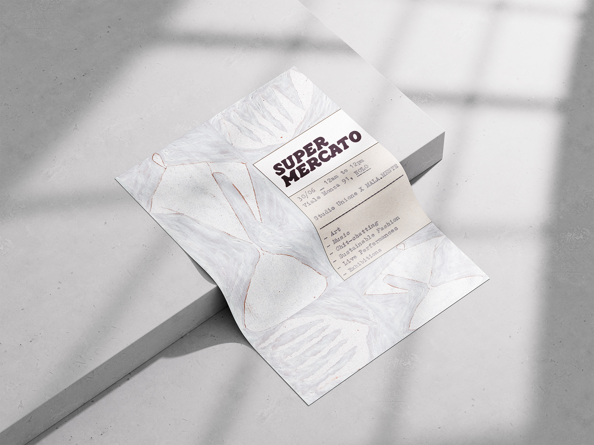
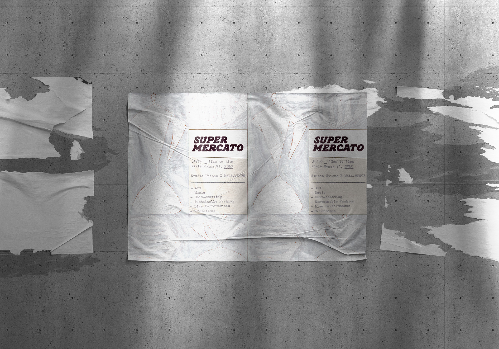
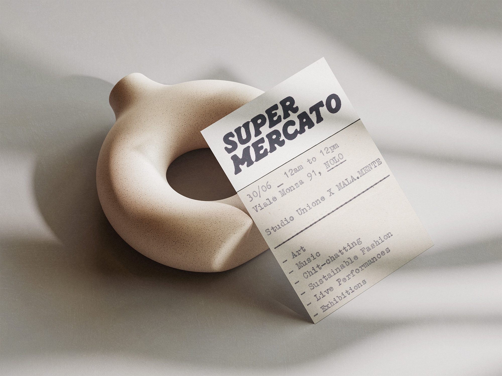

Supermercato
Art Direction + Brand ID
Supermercato (2024).
Supermercato was a collective event conceived and developed with a group of collaborators in a former pastry shop in Milan, located at Via NoLo 91. The project took shape as a temporary market, combining independent artisans, artists, and vintage clothing sellers with a wider cultural program of DJ sets, performances, installations, and a collective exhibition. I curated the art direction and graphic identity of the event, developing a visual language able to reflect its hybrid nature: part market, part exhibition, part social gathering. The identity was designed to feel direct, playful, and accessible, while maintaining a strong visual presence across the event's communication materials. The project aimed to create an informal but carefully constructed environment, where different creative practices could coexist within the same space. The graphic system supported this idea by giving the event a recognizable image and by helping connect the various activities, participants, and formats into one coherent experience.


